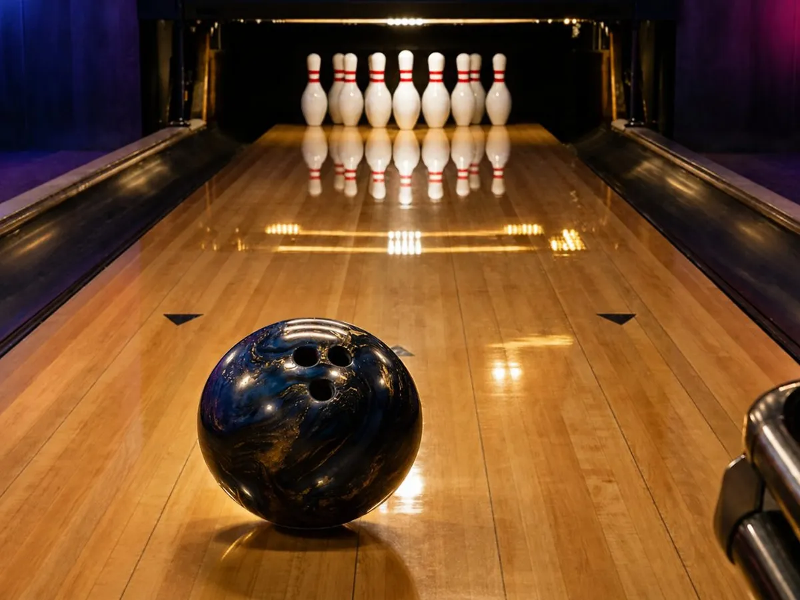

Bowlen in Nijmegen: Olround of Planet Awesome?
Bijgewerkt op 21 november 2026.
Wie in Nijmegen wil bowlen, heeft de keus uit twee plekken: Olround aan de Heyendaalseweg en Planet Awesome aan de Energieweg. Een top 10 heeft dus geen zin. Daarom zetten we die twee naast elkaar. Welke past het best bij jouw avond, je kinderfeestje of je bedrijfsuitje?

Zo hebben we vergeleken
We lazen in oktober 2026 de websites van beide bowlingcentra en van de uitjes in onze bedrijvengids. We keken naar wat je er naast bowlen kunt doen, het eten, de openingstijden, het parkeren en de arrangementen voor feestjes en groepen.
Goed om te weten: op vrijdag- en zaterdagavond is het bij allebei druk. Reserveer je baan daarom vooraf online.
Olround: bowlen bij de campus, tot laat
Olround zit aan de Heyendaalseweg, vlak bij de campus van de Radboud Universiteit. Je bowlt er, en in hetzelfde pand speel je Prison Island: met een team van twee tot vier personen ga je een uur lang van cel naar cel om opdrachten op te lossen. Die twee combineren is precies waarom groepen hier graag komen.
Na het spelen schuif je aan voor een diner van de grill. Er zijn feestjes voor kinderen tot 10 jaar en voor tieners tot 16 jaar, en uitjes voor scholieren, studenten en bedrijven. Doordeweeks ben je vanaf de middag welkom, op vrijdag tot één uur en op zaterdag tot twee uur 's nachts. Parkeren op het eigen terrein is gratis met een uitrijkaart van de receptie.
Goed voor: studenten, een avond die laat mag worden, en bowlen plus een spel.
Planet Awesome: bowlen en nog veel meer
Planet Awesome aan de Energieweg is een groot overdekt centrum. Je bowlt er op een van de twaalf banen, maar je kunt ook racen op een kartbaan over meerdere verdiepingen, lasergamen in een eigen arena of 18 holes glow-in-the-dark golf spelen. Met vrienden huur je een eigen karaokekamer, en tussendoor zijn er arcadespellen.
In het restaurant eet je burgers, spareribs, loaded fries of bitterballen, met cocktails of speciaalbier. Voor groepen zijn er arrangementen met buffet of shared dining in de Skylounge. Parkeren is gratis. Planet Awesome is elke dag vanaf de middag open, op vrijdag en zaterdag tot middernacht. De tijden wisselen per week, dus kijk even op de site.
Goed voor: gezinnen, kinderfeestjes en groepen die meer willen dan alleen bowlen.
Naast elkaar
| Olround | Planet Awesome | |
|---|---|---|
| Waar | Heyendaalseweg, bij de campus | Energieweg |
| Naast bowlen | Prison Island | Karten, lasergamen, glow-in-the-dark golf, karaoke, arcade |
| Eten | Diner van de grill | Burgers, spareribs, buffet of shared dining voor groepen |
| Weekend open tot | Zaterdag tot 02.00 uur | Vrijdag en zaterdag tot 00.00 uur |
| Kinderfeestje | Ja, tot 10 jaar, en tienerfeestjes tot 16 | Ja |
| Parkeren | Gratis, met uitrijkaart | Gratis |
Welke kies je?
- Je wilt alleen een paar potjes bowlen en daarna nog even door: Olround. Je zit dicht bij de stad en op zaterdag kun je tot diep in de nacht blijven.
- Je groep wil afwisseling: Planet Awesome. Bowlen, karten en lasergamen op één plek, dus iedereen vindt iets.
- Een kinderfeestje: allebei kan. Bij Planet Awesome is er meer te doen voor kinderen die niet van bowlen houden, Olround heeft aparte arrangementen voor kinderen en tieners.
- Een uitje met collega's: bowlen plus Prison Island bij Olround is een goede combinatie van samen spelen en samen puzzelen. Bij Planet Awesome boek je een arrangement met eten in de Skylounge.
Vaker bowlen? Word lid
Wil je elke week bowlen? De Nijmeegse Bowling Vereniging speelt bij Olround huisleagues op maandag en woensdag, in duo-, trio- of quattroteams. Er zijn ook toernooien, zoals het clubkampioenschap en het Marikentoernooi.
Meer ideeën voor een middag of avond binnen vind je in Nijmegen bij regen en de beste escape rooms in Nijmegen. Alle uitjes staan in de bedrijvengids onder uitjes.
Meer in onze gids uitjes en activiteiten in Nijmegen.
Veelgestelde vragen
Waar kun je bowlen in Nijmegen?
Bij Olround aan de Heyendaalseweg en bij Planet Awesome aan de Energieweg.
Waar kun je in Nijmegen bowlen en lasergamen op één plek?
Bij Planet Awesome aan de Energieweg. Daar kun je ook karten, glow-in-the-dark golf spelen en karaoke zingen.
Tot hoe laat kun je bowlen in Nijmegen?
Olround is op vrijdag open tot één uur en op zaterdag tot twee uur 's nachts. Planet Awesome is op vrijdag en zaterdag open tot middernacht.
Kun je in Nijmegen een kinderfeestje vieren met bowlen?
Ja, bij allebei. Olround heeft feestjes voor kinderen tot 10 jaar en tieners tot 16 jaar. Planet Awesome heeft kinderfeestjes waarbij je bowlen kunt combineren met andere activiteiten.
Is parkeren gratis bij de bowling in Nijmegen?
Ja. Bij Olround parkeer je gratis met een uitrijkaart van de receptie, bij Planet Awesome is parkeren gratis.